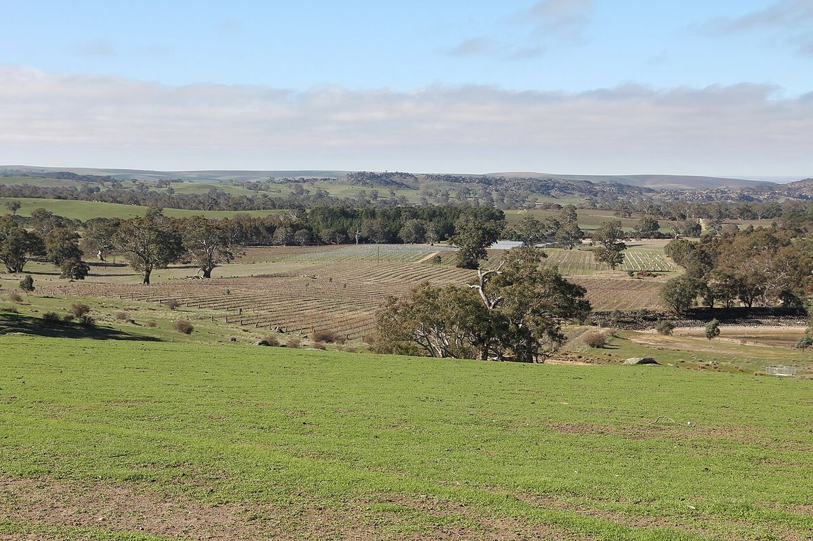

ROUGE
La vallée d’Eden occupe les collines orientales de la Barossa, à une altitude plus élevée que le fond de la vallée. Son climat plus frais donne des rieslings d’une grande finesse et des shiraz élégantes, parmi lesquelles certains des rouges les plus célèbres d’Australie.

La vallée d’Eden se situe dans les Barossa Ranges, à l’est de la vallée de la Barossa, avec laquelle elle forme la zone viticole de la Barossa. En 1847, Joseph Gilbert, colon anglais, planta des vignes à Pewsey Vale, l’un des premiers vignobles du secteur. Peu après arrivèrent des familles d’origine silésienne et prussienne qui s’installèrent autour de localités comme Eden Valley, Springton, Keyneton ou Flaxman Valley. Parmi elles figurait la famille Henschke, dont la cave de Keyneton est devenue l’une des plus prestigieuses du pays grâce à des vins comme Hill of Grace et Mount Edelstone, issus de très vieilles vignes de shiraz.
Pendant une grande partie du XXe siècle, la région fut surtout connue comme source de riesling pour les grandes maisons de la Barossa. Dans les années 1960 furent plantés des vignobles emblématiques dans les secteurs élevés, comme le vignoble Steingarten, sur une pente caillouteuse proche de la limite avec la Barossa, qui révéla le potentiel du riesling en altitude.
Les vignes se trouvent en général entre 400 et 600 mètres d’altitude, dans un paysage de collines ondulées avec des pâturages, des bois d’eucalyptus et des affleurements rocheux. Le climat est nettement plus frais qu’au fond de la vallée de la Barossa, avec des nuits froides, davantage de pluie et un cycle de maturation plus long, ce qui favorise l’acidité et la finesse aromatique. La sous-région de High Eden regroupe certaines des vignes les plus hautes. Les sols sont pauvres et caillouteux, formés de roches métamorphiques et granitiques altérées, avec des sables, des graviers, du quartz et des argiles en profondeur, et limitent souvent la vigueur de la vigne.
Le riesling est le blanc emblématique : sec, délicat, aux arômes de citron vert, de fleur d’oranger et de fleurs blanches, avec une acidité ferme qui lui permet de vieillir de nombreuses années et de développer des notes grillées. On le compare souvent à celui de Clare, bien qu’il soit fréquemment décrit comme un peu plus floral et fin. La shiraz donne des rouges de corps moyen, plus épicés et plus frais que ceux de la Barossa, aux fruits rouges et noirs et aux tanins fins. On cultive aussi le chardonnay, le cabernet-sauvignon et le viognier, cépage relancé en Australie précisément dans ce secteur. Beaucoup de vins portent le nom Eden Valley, mais les raisins de la région entrent aussi dans des assemblages étiquetés Barossa.